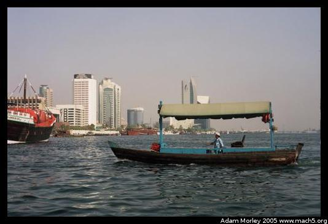

Dubai, UAE is a city of contrasts. A city of immense wealth, it is home to the world's only seven star hotel (I thought there were only five?), artificial islands in the shape of a palm tree, and an indoor down-hill ski area. Yes, you can down-hill ski when it is over one-hundred degrees Fahrenheit (forty Celsius). The down-hill slope is actually inside a shopping mall, so you can then proceed to go shopping afterwards. The largest building is under construction in Dubai right now.
Why do they need artificial islands? So you can have 360 degrees of waterfront that no one can build in front of. Crazy. There is another development that has islands in the shape of the globe --- so you could own England, for example.
The airport is massive. The wealth is amazing. The traffic reminds me of Los Angelas and San Diego at rush hour (except the traffic is bad in Dubai all the time). There are more five-star hotels, shopping malls and luxury condominiums than I thought possible for one city to have.
But Dubai is also home to many immigrant workers who have few rights and make little money.
It is also a land where you can see a Muslim woman fully covered in black cloth with only her eyes showing. When it is over one-hundred degrees. Then, just a few minutes later, you'll see a male UAE national talking on his cell phone and drinking a cup of Starbucks coffee.
I had originally planned to stay in Dubai for forty-eight hours as a layover on my way back to the USA, but because of my overbooked flight it turned into twenty-three. I did a lot of taxi-riding (air conditioned) to see the things I saw.
Arabic signage on the Emirates flight. Emirates is an impressive airline, with an amazing array of food and movie selections. I flew from Dubai to JFK on a fourteen hour flight. It went surprisingly well. I don't usually watch too many movies, so I had the opportunity to catch up on the flight. I watched six.
The airport from the arrival hall, looking down into the departures hall.
The view out my hotel window. I was near the old part of town (Bur Dubai).
The famous textile souq. Dubai has been famous for many years for both its perl divers, and for its souqs. The textile souq sells different kinds of fabric, and has for many years. Silk even. Other souqs include the gold souq and the spice souq. Notice a pattern? All things which Muslims aren't supposed to have.
Dubai is separated by a river, quite handy in the middle of the desert. In the foreground, you can see one of the water taxis which can be used to cross the river.
The Dubai City Museum housed in an old fort (Al-Fahidi) gives and amazing overview of the history of Dubai and its growth into a major economic hub of the Middle East.
At the time I took this photo, I was thinking of my Danish host parents (hej!), since that is Danish butter (dansk smør) with an Arabic label. As I write this, I wonder if it's still in the bin at the little corner store where I purchased a large amount of water. It was, after all, over forty degrees Celsius. I drank almost a liter an hour because of the heat and the humidity, which topped forty percent the day I was in Dubai. It was, after all, the beginning of September.
All the toilets come with two options: TP or hose.
Me riding across the river on a water taxi. The man you see sitting next to me was literally dripping because it was so hot (as was everyone else). In real life, you can see the sweat in the photo. It's amazing.
One of the requirements for signage in Dubai is that it appear in both English and Arabic.
I took a taxi out to one of the many beach resorts for which the UAE is famous. I had planned to eat dinner there, but it turned out my attire was not up-to-snuff (wonder why, I didn't pack anything fancy to go to Kenya...). But I did visit the beach, which had very finely-grained sand, almost like ash.
Development from the beach. The buildings in the second photo are actually on reclaimed land, so they "block" existing waterfront, to an extent.
My feet in the Persian Gulf. Normally, I wouldn't bother to photograph this, but it was such an odd experience that I had to take a photo. You see, it was late in the day (about four o'clock), and I was looking forward to the cool water. Turns out the water is hot. Not cool. Not refreshing. But hot. This made sense, as when I took a shower in the hotel, I used the cold water. Which was hot enough for a shower, at times too hot.
On the way to Emirates Towers, which has more casual friendly dining. This is the famous Sheikh Zayed Road, which was just a two-lane road through the desert only twenty years ago. I found an amazing aerial photo of the road.
I ate dinner at the above pictured mega building (the second photo is the hotel lobby), Emirates Towers. One tower is a hotel, the other is offices, and the hotel constantly wins "Best Business Hotel in the World" from seemingly everyone who rates hotels. Connecting the two is a shopping mall with all of the finest designers. I ate dinner at a place called The Rib Room. Many who know me will find this odd, since I don't eat meat if I can help it. However, of the restaurants in the towers, The Rib Room had the most vegetarian friendly dish --- an amazing Eggplant dish.
Taken from the balcony in the shopping mall connecting the towers. You can see a map of further development on the waterfront of the Persian Gulf, and some folks coming down the escalators. Just before I snapped the photo of the man in white talking on his cell phone, there was another man in white also on a cell phone but drinking Starbucks coffee.
Adam can be reached at adam dot morley at gmail dot com